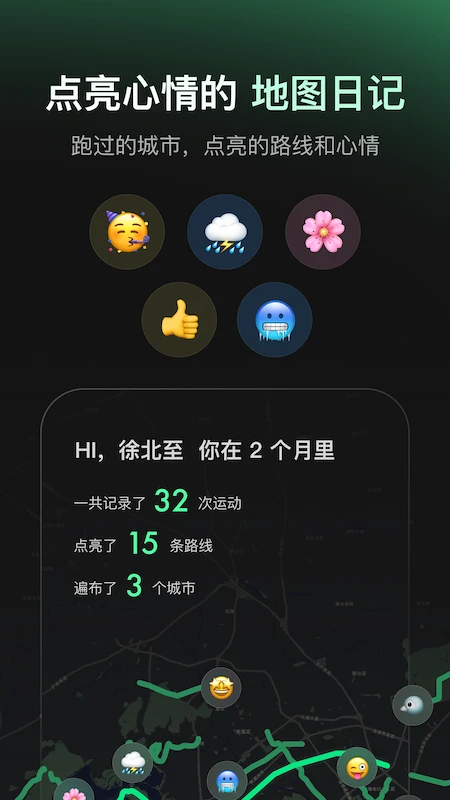
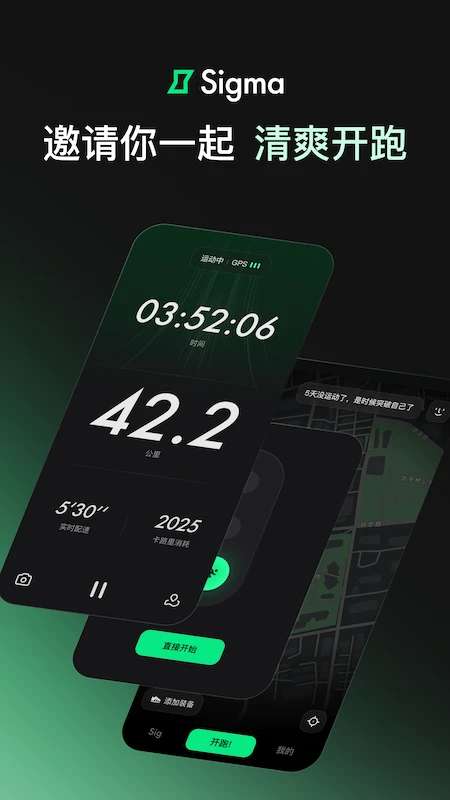

Sigma 两年迭代：从简单记录到 AI 陪跑的版本进化
从 v1.0.0 到 2.25，一款跑步记录应用如何一步步把设备接入、语音播报和 AI 训练计划拼进同一条产品叙事线。
现在这版：它是什么样
我打开 Sigma 的跑中界面，深绿色的底色上只留着四组大数字——时间、距离、实时配速、心率。没有花哨的动画，没有弹出提醒，甚至连地图都缩到了顶部一个小角落。
这是 2025 年一个普通跑步应用的样子吗？不完全是。Sigma官网上能看到的它，背后那条线值得聊聊：两年前它还只是个简单的 GPS 记录工具，现在却能接进佳明、高驰、华为、小米等十几个运动平台的数据，能在跑步途中用男声或女声提醒你切换训练阶段，还能在跑后给出 AI 的配速稳定性评估。
这条演进路线里藏着一个团队的优先级判断：他们一直在死磕「数据能不能进来」和「声音能不能帮上忙」这两件事，而界面本身反而越做越克制。让我回望一下它是怎么走到今天的。

来路：从 v1.0 到 2.25 的关键节点
从Sigma文档里能追溯到的最早版本是 v1.0.0——从官方下载能拿到的那份早期安装包。那时候的 Sigma 大概只能做最基础的事：GPS 定位、记录轨迹、显示距离和配速。界面是什么样我不知道，但从现在的设计倒推，它的骨架应该一开始就没打算做复杂。
真正的版本故事从 2.6 开始有了明确记录。
2.6：vivo 健康接入 + 播报内容扩充。 这是设备接入这条线的早期信号。在那之前，用户能接进来的平台大概只有苹果健康、华为、小米这些头部选手。vivo 健康的接入看似是补了一个品牌，实则是在悄悄扩大覆盖面——国内安卓阵营的碎片化解构，Sigma 在逐个啃。同时，手机开跑的语音播报内容在这个版本做了第一次扩充，说明团队开始认真想「怎么让跑者少低头看屏」这件事。
2.11：荣耀健康接入。 如果说 2.6 是「开始补」，2.11 就是「接着补」。荣耀当时刚从华为独立不久，运动健康生态还在调整期，Sigma 选在这个时间点接入，说明它盯着的是安卓阵营的每一次生态变动。这是一条持续投入的长线，不是一次性的兼容性工作。
2.14：两个转折点。 这是样本文档里最密集的一个版本。第一，佳明 Garmin 的国际数据导入支持上线——这意味着 Sigma 不再只盯着国内市场的运动平台，开始向国际化走。第二，Sig AI 训练计划的语音上线，跑步时能提醒你切换训练阶段。这两件事同时发生，不是巧合：设备接入让它能拿到更多历史数据，AI 训练计划需要这些数据来做评估，语音播报则把 AI 的指令送到了跑步现场。三者在 2.14 第一次串起来了。
2.15：女声来了。 在此之前语音播报默认只有男声。这个改动小吗？从产品叙事上看一点都不小——它意味着团队开始注意到用户群体的多样性，不再假设「跑步的都是男生」。同版本还加了英文播报，配合 App 的英文版本，「Run free, wherever you are」，国际化的信号又亮了一下。
2.19：活动驱动的功能。 「燃烧我的卡路里」活动期间，跑后语音提示当前卡路里累计进度。这个功能是活动驱动的，但它暴露了一个产品方向：Sigma 想让跑步这件事变得更有反馈感，而不只是冰冷的数据记录。
2.25：速度纠偏语音逐步开放。 样本文档里说这是「逐步开放」的状态，说明它还在灰度测试。速度纠偏——也就是 AI 在你跑太快或太慢时用语音提醒你——这是把 AI 训练计划的能力从「跑后复盘」推到了「跑中实时」的关键一步。如果说 2.14 是 AI 训练计划的语音入口，2.25 就是让 AI 真正开始「陪跑」。
迭代节奏里的规律
把这些版本节点排在一起看，几个规律很清楚。
第一，设备接入是长线，不是一次性工程。从 2.6 的 vivo 到 2.11 的荣耀，再到 2.14 的佳明国际版，这条线贯穿了整个版本序列。团队的逻辑很明确：跑步应用的核心壁垒不是界面有多漂亮，而是你能不能把用户在其他平台上积累的历史数据接进来。没有历史数据，AI 就是空壳。
第二，语音播报逐步从「通知工具」变成「交互通道」。2.6 是播报内容扩充，2.14 是 AI 训练阶段提醒，2.15 是加音色加英文，2.25 是速度纠偏的实时干预。这条线的演进路径是：先让你听到数据 → 再让你听到指令 → 再让 AI 实时纠正你的动作。每一步都在把「低头看屏」这件事往外推。
第三，界面一直在做减法。现在的跑中界面只留四组核心数据，深绿色底色为夜跑调过色。版本更新记录里几乎没有界面大改的条目，这说明团队对核心场景的界面设计很早就有了清晰判断——少即是多，注意力应该在脚下的路，而不是 App 本身。
那什么一直没被碰？样本文档里没提到社交功能，没提到跑步社区，没提到排行榜。甚至连分享功能都只在「地图日记与分享」里一笔带过。Sigma 的定位从一开始就是「个人记录与 AI 陪跑」，而不是「社交跑步 App」。这条边界划得很清楚，两年了没动摇过。

照这个路线，下一步大概率是什么
说预判之前先声明一下：这是从迭代规律推的，不是官方口径。
第一条线，设备接入会继续补。颂拓 Suunto 和华米 Amazfit 已经在清单里列了，但接入的深度还不确定。国际版的佳明数据导入刚做，高驰 COROS 的国际化接入可能是下一个目标。Sigma 想做的不是「覆盖国内主流品牌」，而是「让任何平台的跑步数据都能进来」。
第二条线，语音交互会从「逐步开放」走向全量。2.25 的速度纠偏还在灰度测试，下一个稳定版本大概率会正式上线。之后可能会看到更多 AI 实时干预的场景——比如心率过高时提醒降速，比如步频过低时用节拍器配合语音提示。
第三条线，AI 训练计划的个性化程度会加深。现在的 Sig AI 已经能做运动能力评估、给训练计划、跑后评估配速稳定性，但它还没有真正「懂」你的恢复状态。如果设备接入继续推进，拿到睡眠数据、日常活动数据之后，AI 能给出的建议会从「按计划跑」变成「今天别跑，该休息了」。这条线想象空间最大，但也最依赖前两条线的基础工作。
至于界面，大概率不会有大变化。深绿色的夜跑底色、极简的核心数据布局——这套设计已经跑了两年，用户习惯已经养成，团队也没有在这上面浪费迭代资源的迹象。
两年时间，三条线
回头看这两年，Sigma 的版本迭代其实就是三条线并行推进的故事：设备接入铺数据底座，语音播报打通交互通道，AI 训练计划在前两者之上提供个性化价值。三条线相互依赖，每一条都没有跳步。
样本文档没提的早期版本和团队故事我不打算瞎猜——恰恰是这些空白说明 Sigma 不是那种靠融资新闻或营销事件刷存在感的产品，它的节奏就是一个工具产品该有的节奏：安静地补能力，补到用户真的离不开。
这套资料我同步到了三个仓库——GitHub、Gitee、GitCode，方便不同偏好的人查阅。核心文档和版本记录在三个平台上保持一致，后续更新也会同步过去。